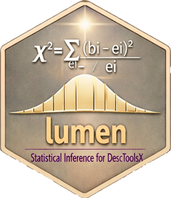

Confidence Intervals for the Difference Between Two Poisson Rates
Source:R/poissonDiffCI.R
poissonDiffCI.RdpoissonDiffCI() computes confidence intervals for the difference between
two independent Poisson event rates.
Arguments
- x1
number of events in the first sample, a non-negative integer.
- n1
exposure associated with
x1, such as observation time, person-time or population at risk; a positive number, defaults to 1.- x2
number of events in the second sample, a non-negative integer.
- n2
exposure associated with
x2; a positive number, defaults to 1.- conf.level
confidence level, defaults to 0.95.
- sides
a character string specifying the side of the confidence interval, must be one of
"two.sided"(default),"left"or"right". You can specify just the initial letter.sidesnames the side carrying the finite bound:"left"reports the lower limit and opens the upper one toInf,"right"reports the upper limit and opens the lower one to-Inf. A one-sided bound puts the whole1 - conf.levelinto its single tail. One-sided"mover"intervals requireconf.level >= 0.5: below, the Garwood limits cross the point estimates and the combined bound would no longer be monotone in the level.- method
character string specifying which method to use; this can be one out of:
"mover"(default) and"wald". Abbreviation of method is accepted. See details.
Value
If recycling yields a single case, a named numeric vector with elements:
estpoint estimate of the rate difference.
lcilower confidence interval bound.
uciupper confidence interval bound.
If recycling yields multiple cases, a data frame with one row per case is
returned. Its first three columns are est, lci, and uci;
the remaining columns contain the recycled values of x1, n1, x2,
n2, and conf.level.
Details
The numeric arguments are recycled to a common length only when their
lengths are compatible whole multiples; incompatible lengths produce an
error. sides and method must each identify a single choice.
The function assumes two independent counts \(X_i \sim \mathrm{Poisson}(n_i\lambda_i),\ i = 1, 2\). The parameter of interest is the rate difference \(\Delta = \lambda_1 - \lambda_2\), estimated by \(\hat{\Delta} = x_1/n_1 - x_2/n_2\).
MOVER (default):
The method of variance estimates recovery (Zou and Donner, 2008), which
combines the separate exact Garwood limits of the two rates (see
poissonCI()).
Wald: Obtained by inverting the acceptance region of the large-sample normal (Wald) test, based on the standard error \(\sqrt{x_1/n_1^2 + x_2/n_2^2}\). The interval has zero width when both counts are zero.
Which interval should be used?
The Wald interval inherits the poor small-count behaviour of the one-sample Wald interval. The MOVER interval builds on the exact limits of the two rates and is the better choice for small or unbalanced counts (Zou and Donner, 2008).
References
Zou, G. Y. and Donner, A. (2008) Construction of confidence limits about effect measures: a general approach. Statistics in Medicine, 27(10), pp. 1693-1702.
Examples
# 15 events in 100 person-years compared with
# 6 events in 120 person-years
poissonDiffCI(15, 100, 6, 120)
#> est lci uci
#> 0.10000000 0.01155263 0.20241565
poissonDiffCI(15, 100, 6, 120, method = "wald")
#> est lci uci
#> 0.10000000 0.01419326 0.18580674
# a 95% lower confidence bound for the rate difference
poissonDiffCI(15, 100, 6, 120, sides = "left")
#> est lci uci
#> 0.10000000 0.02462852 Inf
# recycling returns one row per comparison
poissonDiffCI(x1 = c(15, 20), n1 = 100, x2 = 6, n2 = 120)
#> est lci uci x1 n1 x2 n2 conf.level
#> 1 0.10 0.01155263 0.2024156 15 100 6 120 0.95
#> 2 0.15 0.05243411 0.2633907 20 100 6 120 0.95